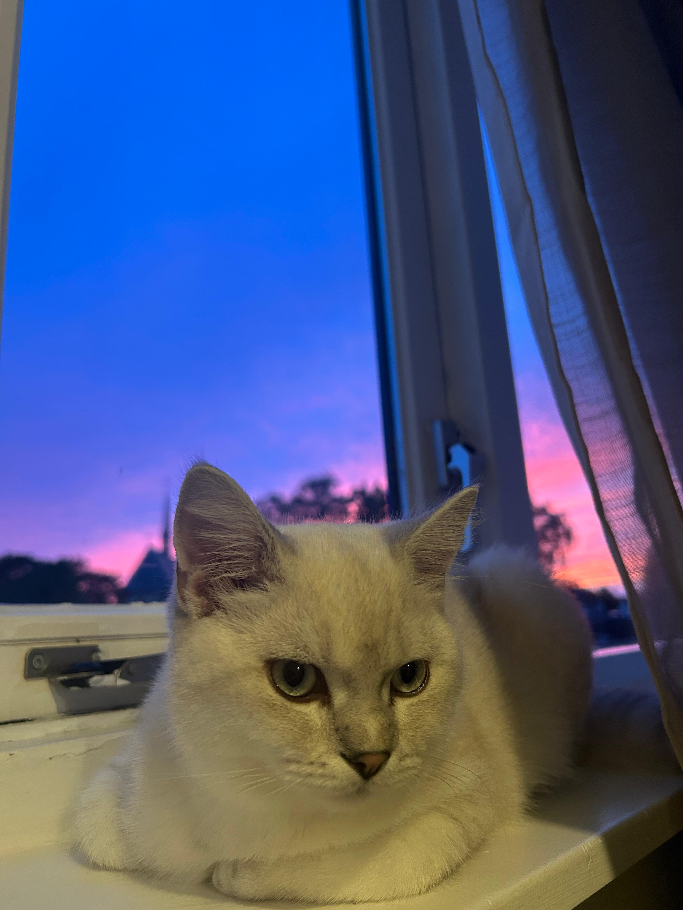
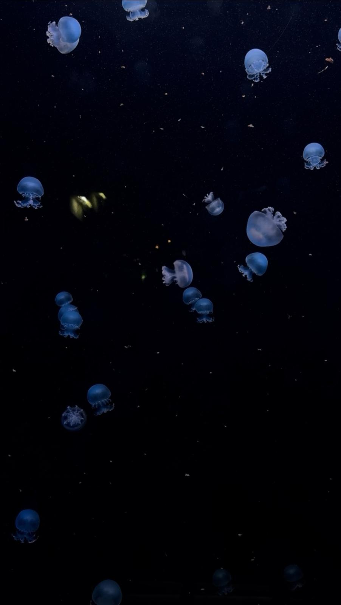
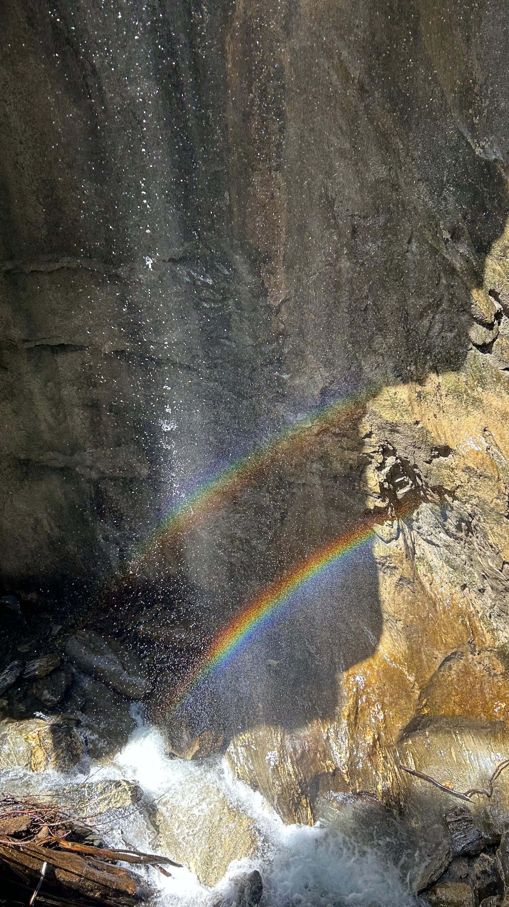

Momenten door mijn lens
Deze website is geïnspireerd op mijn favoriete boom in mijn dorp. Door deze boom in alle vier de seizoenen te zien veranderen, leerde ik anders kijken naar kleuren, licht en de harmonie om me heen. Diezelfde schoonheid zie ik ook terug in andere plekken en kleine details. In dit album verzamel ik foto's van momenten waarop die schoonheid mij opviel.


